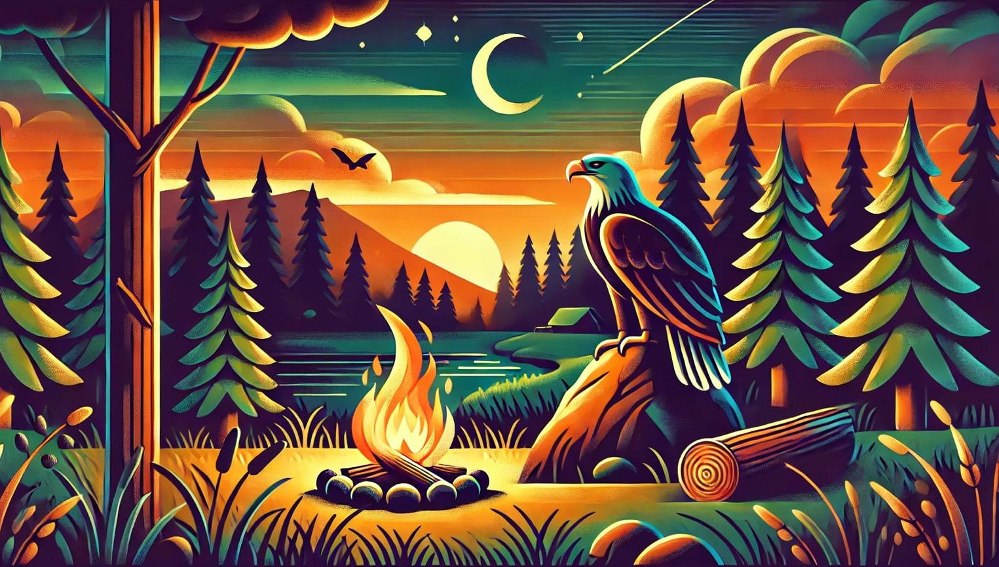

Objetivos de Desarrollo Sostenible

¿Cómo está relacionado nuestro proyecto con estas ods?
Nuestro proyecto está relacionado con las ODSS 13 y 15 porque nuestro principal objetivo es preservar y cuidar las áreas silvestres junto a su biodiversidad, con ayuda de este sistema de vigilancia se pueden preservar estas áreas boscosas.